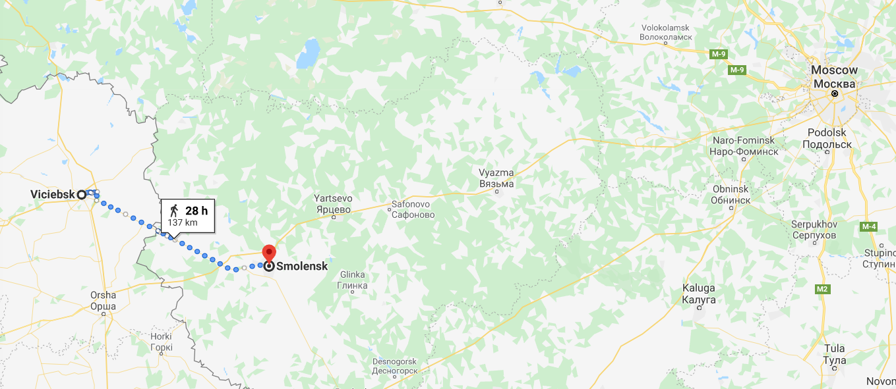
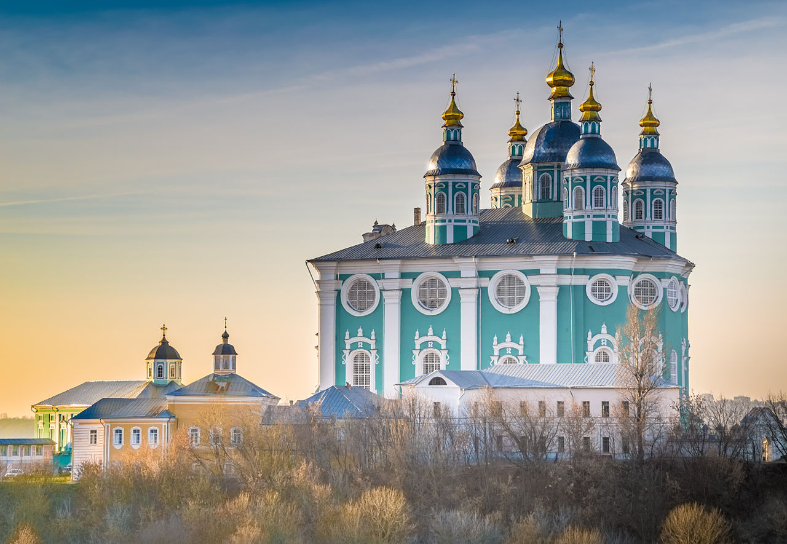
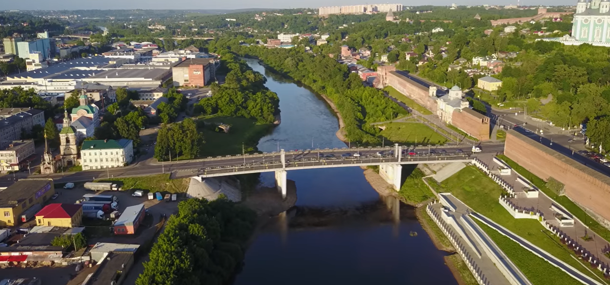
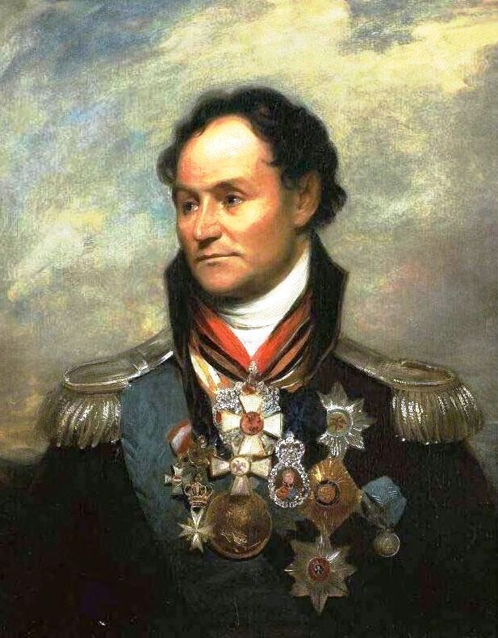

울며 겨자 먹기 - 스몰렌스크 전투 (1)
게시: 2020-03-19T06:30:58+09:00
7월 27일 밤 비텝스크에서 철수한 바클레이의 러시아 제1군은 약 130km 떨어진 스몰렌스크에 8월 1일에 도착했습니다. 하루 약 32km씩 행군한 셈인데, 당시 군대의 하루 평균 행군 거리가 20km이던 것을 생각하면 꽤 강행군이었습니다. 스몰렌스크는 당시 인구 1만5천 정도의 작은 도시였는데, 무엇보다 튼튼한 벽돌로 쌓은 성벽과 총탑으로 무장된 요새 도시였습니다. 게다가 폭이 거의 100m에 달하고 꽤 깊은 드네프르(Dnieper) 강을 북쪽에 끼고 있어서 방어에 크게 유리했습니다. 드네르프 강은 러시아에서 시작하여 우크라이나를 거쳐 남쪽의 흑해로 흘러들어가는 큰 강인데, 스몰렌스크에서는 동쪽에서 서쪽으로 흘렀고, 스몰렌스크는 강의 좌안, 즉 남쪽에 위치해 있었습니다. 프랑스군이 있는 비텝스크는 스몰렌스크의 북서쪽에 있었으므로 프랑스군이 스몰렌스크를 공격하기 위해서는 강을 건너야 했습니다.

(비텝스크로부터 스몰렌스크까지의 거리입니다. 보시다시피 이 두 도시 사이에는 꽤 괜찮은 직선 도로가 깔려 있는데, 1812년에도 상황은 그랬나 봅니다. 그래서 러시아군은 불과 4일만에 이 거리를 주파했습니다.)

(스몰렌스크의 성모 승천 성당 Assumption Cathedral 입니다. 1101년에 최초로 지어졌다는 이 성당은 스몰렌스크가 폴란드에게 점령당했던 1611년에 수비대의 자폭으로 큰 피해를 입었습니다. 이 건물은 나중에 러시아가 스몰렌스크를 탈환한 1674년에 완전히 새로 지어진 것입니다. 이 성당은 스몰렌스크가 1812년 전투로 대부분 소실될 때도 무사했는데, 전해지는 전설에 따르면 이 성당에 들어와 제단을 바라본 나폴레옹도 '이 성당에서 작은 것 하나라도 약탈하는 병사는 내 손으로 직접 처형하겠다' 라고 선언했다고 합니다. 그러나 이렇게 성스러운 성당도 제2차 세계대전 때 나치 독일군의 파괴에서는 벗어나지 못했습니다.)

(현재의 스몰렌스크 시내 모습입니다. 서울처럼 스몰렌스크도 강 건너까지 확장되었습니다. 1812년 당시에도 강 남안의 스몰렌스크와 강 북안을 연결하는 다리가 여러 개 있었습니다.) 바클레이는 일단 스몰렌스크의 강 건너편, 즉 북쪽 강변에 진을 치고 프랑스군을 기다리기로 했습니다. 이유는 2가지였습니다. 스몰렌스크는 건물이 2200여채 정도 밖에 없는 작은 도시라서 8만이 넘는 러시아 제1군을 다 수용할 수 없고, 또 어차피 스몰렌스크에서 프랑스군을 상대로 농성을 할 생각은 없었습니다. 넓은 평원에서 프랑스군과 정면 대결을 벌이거나 아니면 계속 전략적 후퇴를 할 생각이었습니다. 문제는 어느 쪽을 택하느냐 하는 것이었습니다. 전쟁 발발 초기부터 바클레이는 덮어놓고 무조건 후퇴를 할 생각은 없었습니다. 빌나에서 후퇴했던 것은 알렉산드르가 퓰의 계획에 따라 드리사(Drissa) 요새로의 전략적 후퇴를 했던 것이고, 드리사에서는 현지 형편이 어쩔 수 없어서 후퇴한 것이었고, 비텝스크에서는 바그라티온의 제2군이 합류할 수 없어서 후퇴했던 것이었습니다. 그런데, 막상 후퇴를 하다보니 그 재미가 쏠쏠했습니다. 바클레이도 프랑스군 포로 심문 등을 통해 프랑스군이 척박한 리투아니아 땅에서 글자 그대로 녹아내리고 있다는 것을 파악하고 있었습니다. 바클레이는 이대로 계속 후퇴하는 것이 프랑스군에게 더 치명상을 입힐 수 있다고 확신하고 있엇습니다. 그런데 이미 상황은 명색이 총사령관인 바클레이가 마음대로 작전을 정할 수 있는 형편이 아니었습니다. 일단 짜르 알렉산드르가 군을 떠나면서 바클레이에게 진짜 러시아 영토가 시작되는 지점인 스몰렌스크를 지켜내달라고 명령한 상태였습니다. 게다가 군대란 평화 시기에 며칠 행군하기만 해도 각종 질병과 자잘한 부상으로 비전투 손실이 꼬박꼬박 사채 이자처럼 빠져나가는 존재였습니다. 프랑스군보다는 피해가 적은 편이었지만 러시아 제1군도 이미 약 2만 정도의 병력을 후퇴 과정에서 상실했습니다. 게다가 아무래도 후퇴의 연속이다보니휘하 제1군의 사기가 너무 저하되고 있었습니다. 자신과 같은 독일계 참모 장교들은 바클레이의 판단을 이해하고 존중했지만, 당장 조국의 영토를 적에게 내주며 수치스러운 후퇴를 거듭하는 것에 대해 러시아 장교들은 물론 일반 졸병들까지 불만이 넘쳐 났습니다. 그러다보니 명령 불복종과 불손함 등 기강 문란이 점점 심해지고 있었습니다. 분위기가 심상치 않던 차에, 다음 날인 8월 2일 스몰렌스크의 바클레이 진영으로 귀한 손님이 찾아왔습니다. 바로 제2군 사령관 바그라티온과 그의 참모 장군들이었습니다. 이들은 하루 뒤 도착할 제2군 본대보다 먼저 말을 달려 스몰렌스크로 들어왔던 것입니다. 바그라티온은 일부러 훈장이란 훈장을 다 꺼내 코트에 붙인 채 으리으리한 복장을 하고 바클레이의 사령부를 찾아갔고, 바클레이는 독일인다운 무척 검소한 군복 차림으로 그를 맞이했습니다. 이 둘은 무척이나 사이가 좋지 않기로 전쟁 발발 훨씬 전부터 유명했고 바그라티온은 바클레이를 상급 지휘관으로 인정하지 않고 있었습니다. 그런 상황에서 러시아 장교들과 사병들은 전진파인 바그라티온을 전적으로 지지하고 있었고, 전쟁 발발 이후 이 둘은 처음 얼굴을 맞대는 것이었으니 바클레이는 무척 긴장했을 것입니다. 그런데 바그라티온은 뜻 밖에도 이 만남에서 자신과 자신의 제2군은 바클레이의 지휘에 따르겠다고 순순히 고개를 숙였습니다. 이 자리에 있었던 그러나 이 자리에 동석했던 참모 예르몰로프(Yermolov)의 관찰에 따르면 이들 모두는 무척이나 예의와 격식을 차리긴 했지만 상호간에 느껴지는 거리감과 차가운 시선은 어쩔 수 없이 그대로 노출되었다고 합니다. 다음날인 8월 3일, 제2군이 요란한 음악 소리 및 군가 소리와 함게 스몰렌스크에 도착했습니다. 제1군과는 달리 바그라티온의 제2군은 사기가 무척 괜찮은 편이었습니다. 알고보면 이들도 다부에게 쫓겨 계속 후퇴만 한 건 마찬가지였으나, 이들은 제1군과 합류만 하면 반격에 나서게 된다면서 스스로 용기를 북돋우고 있었던 것입니다. 제1군 병사들도 제2군의 입성에 사기가 크게 올랐습니다. 초급 포병 장교였던 미타레프스키(Nicholai Mitarevski)에 따르면 모두들 더 이상의 후퇴는 없을거라며 무척이나 기뻐했다고 합니다. 당시 러시아군은 프랑스군의 현재 병력 수준을 약 15만 정도로 보고 있었는데, 스몰렌스크에 모인 러시아 제1, 2군을 합하면 이제 12만이 한자리에 모이게 된 것이니 정말 싸워볼 만 하다고 모두들 생각했습니다. 아니, 딱 한 명 빼고요. 물론 그 한 명은 바클레이였습니다. 제2군이 보무도 당당히 스몰렌스크에 입성하던 바로 그 날, 바클레이는 알렉산드르에게 보내는 보고서에서 이제 바그라티온과 합류했으니 프랑스군을 공격할 것이며, 가장 최전방에 노출된 네와 뮈라의 부대를 급습하겠다고 적었습니다. 그러나 그건 그냥 계획이었고, 실제로 바클레이는 그 공격에 무척이나 회의적이었습니다. 여기서 대규모 회전을 벌이는 것은 누구보다도 나폴레옹이 바라는 일이라고 생각했으니까요. 그는 견고한 요새 도시인 스몰렌스크에 소수의 수비대를 남겨 시간을 끌게 하고 러시아군 주력부대는 다시 후퇴시켜 병력을 보존하는 것이 러시아를 구하는 길이라고 생각했습니다. 그러나 이미 영내 분위기는 비록 총사령관일지라도 후퇴라는 말을 꺼낼 수가 없는 지경이었습니다. 눈치를 보던 바클레이는 도저히 혼자의 책임으로 후퇴를 명령할 자신이 없자 결국 8월 6일 군사위원회를 소집하여 토론을 했는데, 당연히 결론은 프랑스군을 향해 전진 공격한다는 것으로 났습니다. 울며 겨자 먹기로 공격에 나서게 된 바클레이는 그래도 공격할 거면 제대로 하자는 생각에 막강한 병력을 집중시켜 전선 앞으로 돌출된 네와 뮈라의 부대를 크게 한방 칠 계획이었습니다. 그는 스몰렌스크에 소수의 수비대만 남기고, 전군을 크게 3개 부대로 나누었습니다. 먼저 자신의 제1군이 우익을, 바그라티온의 제2군이 좌익을 맡고, 중앙에는 제1군과 제2군에서 각각 차출한 기병대를 선봉으로 세웠는데, 그 선봉 기병대의 지휘는 제2군의 플라토프(Matvei Ivanovich Platov) 장군이 맡고 제1군의 팔렌(Peter Graf von der Pahlen) 장군이 보좌했습니다. 이들은 8월 7일, 드디어 비텝스크를 향해 전진을 시작했습니다.

(플라토프 (Matvei Ivanovich Platov) 장군입니다. 그는 일찍부터 돈(Don) 강 유역의 카자흐 부대에서 복무했고 이번 전쟁에도 돈 카자흐 기병 부대를 이끌고 바그라티온의 제2군을 지원했습니다. 그는 전후인 1814년 짜르 알렉산드르와 함께 런던을 방문하여 옥스포드 대학에서 명예 학위를 받기도 했는데, 이 초상화도 그때 영국인 화가 William Beechey에 의해 그려진 것입니다. 이 초상화는 웰링턴과 함께 이베리아에서 싸웠던 베레스포드(William Beresford) 경의 선물이었다고 합니다.) 순조롭게 전진하던 첫날, 밤이 되어 숙영을 시작한 바클레이에게 첩보가 들어옵니다. 비텝스크에서 북동쪽 방향인 포리에치(Poriechie)에 프랑스군이 나타났다는 것이었습니다. 이는 여태까지 알고 있던 프랑스군의 포진과는 무척 다른 상황이었습니다. 바클레이는 프랑스군이 자신들의 반격을 감지하고 북쪽으로 우회하여 자신의 우측 측면을 들이치려는 의도라고 판단했습니다. 그는 이대로 프랑스군의 정면에 뛰어들다가는 적의 함정에 빠지겠다 싶어 먼저 측면의 적, 즉 포리에치의 프랑스군을 격파하기로 결정을 하고 북서쪽으로의 진격 방향을 90도 우측으로 꺾었습니다. 동시에 바그라티온과 플라토프에게도 전갈을 보내 역시 90도 우회전을 명령합니다. 여기서 생각하지 못했던 일의 씨앗이 싹을 틔웁니다. 그리고 이 싹은 반전에 반전을 거듭하며 자라나다 결국 러시아군 전체를 나폴레옹으로부터 구해냅니다.
Source : 1812 Napoleon's Fatal March on Moscow by Adam Zamoyski Napoleon: A Life By Andrew Roberts https://en.wikipedia.org/wiki/Dnieper https://en.wikipedia.org/wiki/Smolensk https://en.wikipedia.org/wiki/Assumption_Cathedral_in_Smolensk http://www.davishunter.com/home/place/Smolensk